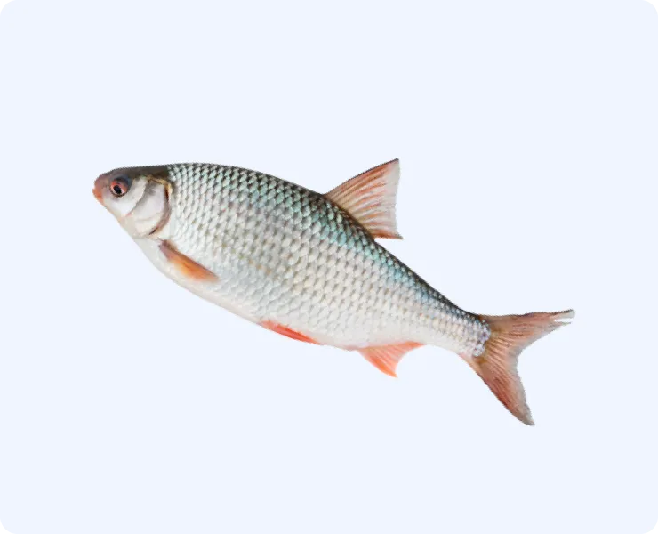

Рыба для пруда
Плотва
Цена и наличие
- 6-10 см1,9 BYN / шт.В наличии
- 10-20 см2,4 BYN / шт.В наличии
Данные на 23.11.2026.
Характеристики
- Внешний вид
- Она имеет вытянутое тело, покрытое мелкой чешуей
- Сезонность
- Апрель-август
- Возраст
- Сеголетки, годовики
- Максимальный вес
- До 1.8 кг
- Продолжительность жизни
- До 14 лет
- Половая зрелость
- Обычно наступает в возрасте 2–4 лет. Самцы, как правило, созревают раньше самок: примерно в 2–3 года, самки — чаще в 3–4 года. Срок зависит от скорости роста и условий конкретного водоема
- Питается
- Плотва — всеядная рыба. В рацион входят зоопланктон, личинки водных насекомых, моллюски, мелкие ракообразные, другие донные беспозвоночные, водоросли, мягкий растительный материал и детрит. Состав питания меняется с возрастом и доступностью корма
- Температура воды для активного питания и размножения
- Активное питание и рост усиливаются после прогрева воды примерно выше 12–15 °C, наиболее благоприятные условия для роста находятся приблизительно в диапазоне 20–27 °C. Нерест проходит в значительно более холодной воде — обычно примерно при 10–16 °C, хотя у разных популяций возможен более широкий диапазон
- Условия пруда для содержания
- Подходят стоячие и слабопроточные пресноводные водоемы с прибрежной и подводной растительностью, участками открытой воды и достаточно глубокой зоной для зимовки. Плотва хорошо приспосабливается к различным условиям, однако для стабильного содержания необходим нормальный кислородный режим и отсутствие сильного загрязнения воды
- Рост
- Сеголетки 10-30 г, двухлетки 30-100 г, трехлетки 100-200 г
Описание
Плотва — неприхотливая стайная рыба для зарыбления пруда, любительской рыбалки и формирования естественной кормовой базы для щуки, окуня и других хищников.
УСЛОВИЯ ОБИТАНИЯ
Плотва — неприхотливая пресноводная стайная рыба, хорошо приспособленная к жизни в прудах, озерах, водохранилищах и медленно текущих реках. Она использует как заросшие прибрежные участки, так и открытую воду. Молодая рыба чаще держится возле растительности, где находит корм и укрывается от хищников, а крупные особи могут большую часть времени проводить на более открытых и глубоких участках. Постоянная проточность плотве не требуется. Желательно наличие водной растительности, участков мелководья, открытой воды и достаточно глубокой зоны для зимовки. Рыба достаточно устойчива к различным условиям водоема, однако продолжительный недостаток кислорода, особенно зимой, остается для нее опасным. Плотва ведет преимущественно стайный образ жизни, поэтому в пруду ее целесообразнее содержать группой. Она хорошо совместима с карпом, линем, карасем и другими мирными рыбами. Одновременно плотва является естественной кормовой базой для щуки, окуня, судака, сома и других хищников, поэтому хорошо подходит для формирования полноценной пищевой цепи в рыболовном пруду. При отсутствии достаточного количества хищников плотва способна активно размножаться и создавать многочисленную популяцию. Высокая плотность приводит к конкуренции за корм, вследствие чего в пруду может появиться большое количество мелкой медленно растущей рыбы. Поэтому при зарыблении важно учитывать не только количество запускаемой плотвы, но и общую структуру рыбного сообщества. Плотва не является специализированной рыбой для очистки пруда. Она действительно употребляет водоросли, растительный материал и детрит, однако ее запуск не решает проблему зарастания, цветения или заиления водоема.
РАЗМНОЖЕНИЕ
Плотва способна самостоятельно и достаточно успешно размножаться в обычном пруду, если имеются подходящие нерестовые участки. В условиях умеренного климата нерест происходит весной, обычно в апреле–мае, когда прибрежная часть водоема начинает прогреваться. Температура нереста значительно ниже температуры наиболее активного летнего питания. В различных европейских популяциях нерест фиксируется примерно от 8 до 17 °C, однако наиболее типичным считается диапазон около 10–14 °C. Конкретные сроки зависят от погоды и скорости прогрева конкретного пруда. Перед нерестом плотва собирается в крупные группы и выходит на мелководные участки. Основными нерестилищами служат подводная и затопленная наземная растительность, прошлогодние стебли растений, корни и другие подводные поверхности. При отсутствии растительности икра может прикрепляться и к подходящему твердому субстрату. Икра плотвы донная и клейкая. После выметывания и внешнего оплодотворения она прочно прикрепляется к растениям и другим подводным предметам. Плотва не строит гнезд и после нереста не охраняет икру или молодь. Продолжительность развития икры зависит от температуры воды. При температуре примерно 15–20 °C инкубация обычно занимает около 4–10 суток, а в более холодной весенней воде может продолжаться дольше. После вылупления личинки некоторое время удерживаются возле растений или других поверхностей, а затем переходят к самостоятельному питанию. При благоприятных условиях плотва способна ежегодно давать многочисленное потомство. Поэтому в небольшом пруду без хищников ее численность необходимо контролировать, иначе высокая плотность рыбы может привести к замедлению роста всей популяции.
КОРМЛЕНИЕ
Плотва — всеядная и очень пластичная в питании рыба. Она способна использовать различные виды естественного корма и менять рацион в зависимости от возраста, сезона и того, какая пища доступна в конкретном водоеме. Молодая плотва питается преимущественно зоопланктоном, мелкими ракообразными, личинками водных насекомых и другими небольшими беспозвоночными. По мере роста рацион становится значительно разнообразнее. Взрослые особи могут активно поедать моллюсков, личинок насекомых, донных ракообразных, водоросли, мягкие части растений и органический детрит. В разных прудах рацион может сильно отличаться. Например, там, где много моллюсков, они способны составлять значительную часть питания крупной плотвы, а в других водоемах существенную роль играют нитчатые водоросли и детрит. При богатой естественной кормовой базе специальное кормление плотвы обычно не требуется. При необходимости ее можно подкармливать полноценными кормами для карповых и других всеядных прудовых рыб. Количество корма необходимо подбирать с учетом температуры воды и естественной продуктивности пруда, не допуская накопления несъеденных остатков. Наиболее интенсивное питание и рост происходят в теплый период года. Экспериментальные исследования показывают широкий температурный оптимум роста примерно 20–27 °C, тогда как ниже 12 °C рост и потребление пищи существенно уменьшаются.
ЗИМОВКА
Плотва хорошо приспособлена к зимовке в открытых водоемах и нормально переносит климатические условия Беларуси. Осенью по мере охлаждения воды она становится менее активной и постепенно перемещается в более глубокие и спокойные участки пруда, где температура остается стабильнее. Плотва не впадает в спячку и не прекращает жизнедеятельность полностью. Даже зимой она способна перемещаться и периодически питаться, однако интенсивность кормления и обмена веществ значительно ниже, чем в теплое время года. Поэтому специально интенсивно кормить плотву зимой обычно не требуется. Главную опасность представляет не холодная вода, а продолжительный дефицит растворенного кислорода под ледяным покровом. Особенно высок риск в мелких, сильно заиленных, заросших или перенаселенных рыбой прудах, где разложение органики дополнительно расходует кислород. Для надежной зимовки необходимо наличие достаточно глубокой незамерзающей зоны и стабильного кислородного режима. При риске зимнего замора рекомендуется использовать аэрацию. Весной после прогрева воды плотва быстро увеличивает активность, выходит на мелководные участки и начинает готовиться к нересту.